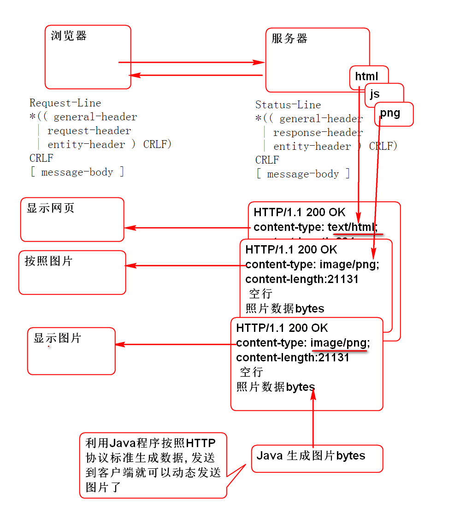

HTTP 支持任何文件类型的下载
请参考: http://doc.tedu.cn/rfc/rfc2616.txt
文件下载原理: Web 服务器将需要发送的文件按照HTTP协议封装为Response包, 发送到客户端, 客户端浏览器根据Response中的协议头决定如何处理文件.

利用Java程序(Servlet, Spring MVC) 将数据按照HTTP标准封装为Response包,发送到浏览器客户端就可以实现文件的下载.
利用Servlet 生成图片, 并且按照HTTP协议标准发送的浏览器
public class ImageServlet extends HttpServlet {
@Override
protected void doGet(HttpServletRequest req,
HttpServletResponse resp)
throws ServletException, IOException {
//获取要发送的图片数据
byte[] png = createPng();
resp.setContentType("image/png");
resp.setContentLength(png.length);
//将png图片写入body
resp.getOutputStream().write(png);
resp.getOutputStream().close();
}
//动态生成图片数据
public byte[] createPng() throws IOException{
//1. 创建图片对象
BufferedImage img = new BufferedImage(
200, 100, BufferedImage.TYPE_3BYTE_BGR);
img.setRGB(100, 50, 0xffffff);
//2. 将图片编码为 png
ByteArrayOutputStream out=
new ByteArrayOutputStream();
ImageIO.write(img, "png", out);
out.close();
//3. 得到所有的bytes
byte[] ary = out.toByteArray();
return ary;
}
}
提示: 服务器需要先发送ContentType, 和ContentLength, 再将png数据放在消息Body发送到客户端.
部署Servlet
<servlet>
<servlet-name>png</servlet-name>
<servlet-class>cn.tedu.cloudnote.web.ImageServlet</servlet-class>
</servlet>
<servlet-mapping>
<servlet-name>png</servlet-name>
<url-pattern>/demopng</url-pattern>
</servlet-mapping>
浏览器测试:
http://localhost:8080/cloudnote/demopng
在网页中显示 demo.html
<!DOCTYPE html>
<!-- demo.html -->
<html>
<head>
<meta charset="UTF-8">
<title>DEMO</title>
</head>
<body>
<h1>显示图片</h1>
<img alt="" src="demopng">
</body>
</html>
浏览器测试:
http://localhost:8080/cloudnote/demo.html
编写控制器动态生成图片 DemoController
@Controller
@RequestMapping("/demo")
public class DemoController {
@RequestMapping(
produces="image/png",
value="/png.do")
@ResponseBody
public byte[] png()
throws Exception{
byte[] png = createPng();
return png;//填充响应消息的 body
}
public byte[] createPng() throws IOException{
//1. 创建图片对象
BufferedImage img = new BufferedImage(
200, 100, BufferedImage.TYPE_3BYTE_BGR);
img.setRGB(100, 50, 0xffffff);
//2. 将图片编码为 png
ByteArrayOutputStream out=
new ByteArrayOutputStream();
ImageIO.write(img, "png", out);
out.close();
//3. 得到所有的bytes
byte[] ary = out.toByteArray();
return ary;
}
}
produces="image/png" 用于向客户端发送协议头:ContentType @ResponseBody 会自动的将返回值 byte[] 封装到协议Body中发送到客户端. @ResponseBody 不仅能处理Json返回值, 还能处理2进制数据byte[]
客户端利用img标签显示图片: demo.html
<img alt="" src="demo/png.do">
测试
...
导入Excel处理API POI
<dependency>
<groupId>org.apache.poi</groupId>
<artifactId>poi</artifactId>
<version>3.13</version>
</dependency>
利用Spring控制器生成Excel文件: DemoController
@RequestMapping(
produces="application/vnd.ms-excel",
value="/excel.do")
@ResponseBody
public byte[] excel(HttpServletResponse res) throws Exception{
byte[] bytes = createExcel();
//按照HTTP协议 RFC2616 19.5.1 Content-Disposition 发送文件名
res.addHeader("Content-Disposition",
"attachment; filename=\"hello.xls\"");
//Content-Disposition: attachment; filename="fname.ext"
return bytes;
}
private byte[] createExcel() throws IOException{
//1. 利用POI API创建Excel对象
//创建Excel 工作簿
HSSFWorkbook workbook = new HSSFWorkbook();
//创建工作表
HSSFSheet sheet = workbook.createSheet();
//在表中创建行和列
HSSFRow row = sheet.createRow(0);
HSSFCell cell = row.createCell(0);
//在 0,0 格子中写入 Hello World!
cell.setCellValue("Hello World!");
//调用业务层
//2. 将Excel对象编码为byte[]
ByteArrayOutputStream out =
new ByteArrayOutputStream();
workbook.write(out);
out.close();
//3. 返回 byte[]
byte[] bytes = out.toByteArray();
return bytes;
}
produces="application/vnd.ms-excel" 用于向客户端发送Excel文件的ContentType Content-Disposition 协议头用于发送下载保存文件的名称.
在网页中添加下载链接 demo.html
<h1>下载Excel</h1>
<a href="demo/excel.do">Excel</a>
测试...
文件上载标准为: http://doc.tedu.cn/rfc/rfc1867.txt
客户端要求:
<INPUT id="file1" NAME="userfile1" TYPE="file"> 选取上载文件.服务器要求:
Spring MVC 提供了上载请求解析功能, 其底层利用了 Apache 提供的 fileupload 组件.
为了能够处理文件上载请求, Spring需要做如下配置:
导入fileupload组件:
<dependency>
<groupId>commons-fileupload</groupId>
<artifactId>commons-fileupload</artifactId>
<version>1.3.2</version>
</dependency>
配置上载解析器: spring-mvc.xml
<bean id="multipartResolver"
class="org.springframework.web.multipart.commons.CommonsMultipartResolver">
<property name="maxUploadSize" value="1000000"/>
</bean>
Spring MVC处理文件上载:
客户端 demo.html:
<h1>上载文件</h1>
<FORM ENCTYPE="multipart/form-data"
ACTION="demo/upload.do"
METHOD="POST">
File to process:
<INPUT id="file1" NAME="userfile1" TYPE="file">
<INPUT id="file2" NAME="userfile2" TYPE="file">
<INPUT TYPE="submit" VALUE="Send File">
</FORM>
控制器
@RequestMapping("/upload.do")
@ResponseBody
public String upload(
MultipartFile userfile1,
MultipartFile userfile2) throws Exception{
//Spring MVC 会自动解析文件上载流, 将上载信息
// 保存到 MultipartFile 对象中, 注入控制器
//前提:导入Apache 文件上载包和配置上载解析器
System.out.println(userfile1);
System.out.println(userfile2);
//显示原始文件名
System.out.println(
userfile1.getOriginalFilename());
System.out.println(
userfile2.getOriginalFilename());
String name = userfile2.getOriginalFilename();
//处理文件名编码问题
name = new String(
name.getBytes("iso8859-1"), "utf-8");
System.out.println(name);
//获取文件的数据
byte[] data1 = userfile1.getBytes();
//byte[] data2 = userfile2.getBytes();
//InputStream in1 = userfile1.getInputStream();
InputStream in2 = userfile2.getInputStream();
//保存文件 /home/soft01/upload
File path = new File("D:/upload");
path.mkdir();
//文件名解码
String n1 = userfile1.getOriginalFilename();
n1 = new String(n1.getBytes("iso8859-1"),"utf-8");
//将文件保存到 upload 文件夹中
File file1 = new File(path, n1);
FileOutputStream out1 =
new FileOutputStream(file1);
//将数据保存到流中
out1.write(data1);//将data1中全部的数据写到文件
out1.close();
//保存第二个文件
String n2 = userfile2.getOriginalFilename();
n2 = new String(n2.getBytes("iso-8859-1"), "utf-8");
File file2 = new File(path, n2);
FileOutputStream out2 =
new FileOutputStream(file2);
//读取第2个文件的全部数据写到out2中
int b;
while((b=in2.read())!=-1){
out2.write(b);
}
in2.close();
out2.close();
//上载文件的其他信息:
//获取文件的类型
String type1 = userfile1.getContentType();
String type2 = userfile2.getContentType();
//获取表单输入input 控件的名字name
String name1 = userfile1.getName();
String name2 = userfile2.getName();
//获取文件的大小
long size1 = userfile1.getSize();
long size2 = userfile2.getSize();
return "OK";
}
注意: 控制器方法参数 userfile1 与上载
<input type="file" name="userfile1">的name属性一致
测试
注意: 文件大小限制在 文件上载解析器中配置.
利用最新版本的 XMLHttpRequest 2 对象可以进行异步文件上载.
检测浏览器是否支持异步上载:
//检测 AJAX 文件上载需要的对象:
//1. FormData 对象
//2. XHR.onload
if(window.FormData){
console.log("FormData OK");
}
var xhr = new XMLHttpRequest();
if(xhr.upload){
console.log("upload OK");
}
利用Ajax实现文件上载 demo.html:
File to process:
<INPUT id="file1" NAME="userfile1" TYPE="file">
<INPUT id="file2" NAME="userfile2" TYPE="file">
<h1>Ajax上载文件</h1>
<p>XHR的2.0版本提供Ajax上载支持, 老浏览器不能使用</p>
<input type="button" onclick="upload()"
value="AJAX Upload">
<p id="result"></p>
<script type="text/javascript">
function upload(){
//检测 AJAX 文件上载需要的对象:
//1. FormData 对象
//2. XHR.onload
if(window.FormData){
console.log("FormData OK");
}
var xhr = new XMLHttpRequest();
if(xhr.upload){
console.log("upload OK");
}
//在内存中动态创建上载表单对象
var form = new FormData();
//获取 文件输入框中选定的文件对象
var file1 =
document.getElementById('file1').files[0];
console.log(file1);
var file2 =
document.getElementById('file2').files[0];
console.log(file2);
if(file1.size + file2.size > 1000000){
alert("文件太大!");
return;
}
//向表单中添加两个文件
form.append('userfile1', file1);
form.append('userfile2', file2);
//绑定回调函数, 检测上载的结果
xhr.onload = function(){
if(xhr.status == 200){
//获取服务器发回的结果
var str = xhr.responseText;
//显示结果
var p = document.getElementById('result');
p.innerHTML=str;
}else{
alert("上载失败");
}
};
xhr.open('post', 'demo/upload.do');
xhr.send(form);//将表单数据发送到服务器
}
</script>
文件上载服务器端与上一个案例是一致的.